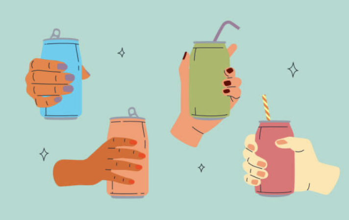

Make your own fruit drink!
Create Weather
 °F
°F
Partly Cloudy
Wind Speed km/h
Wind Chill °F
Summary Information
Information about any coastal area where we choosing

 °F
°F
Information about any coastal area where we choosing